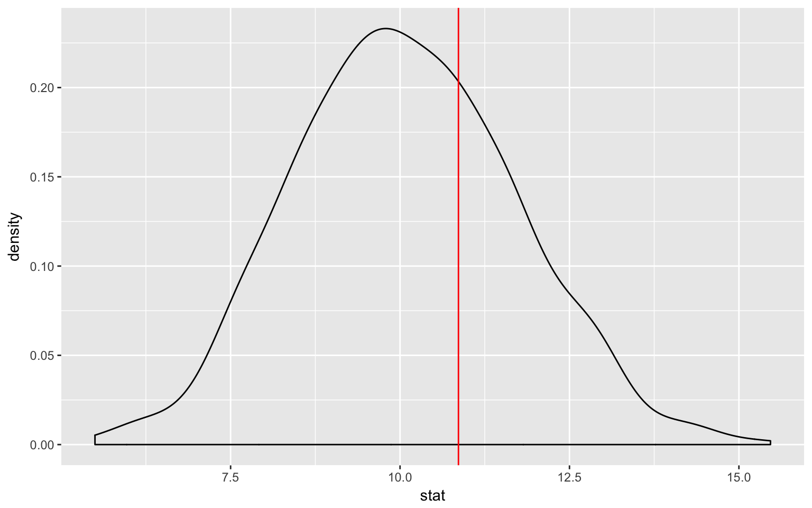
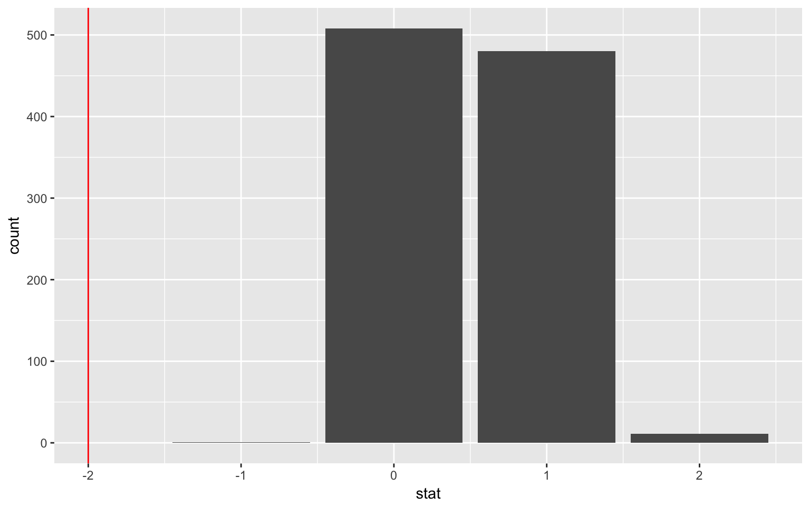
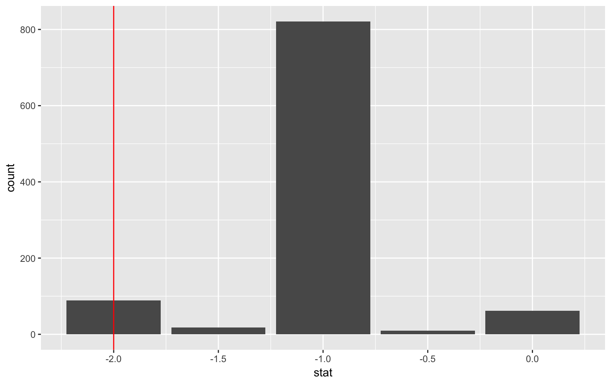
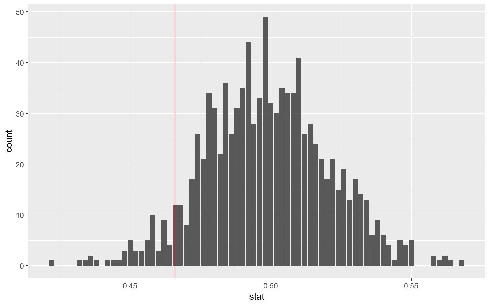
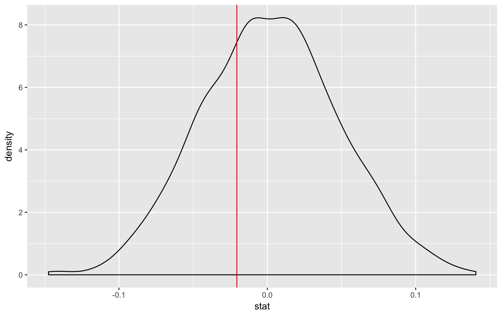
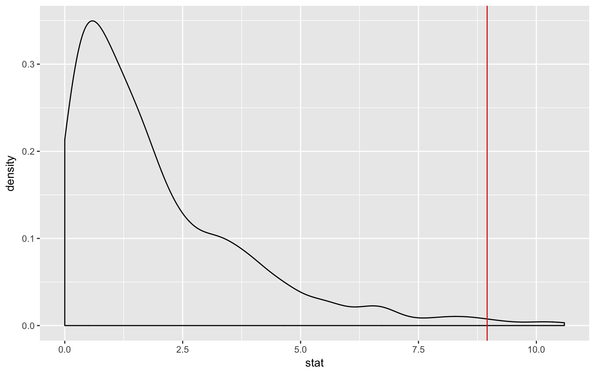

nycflights13 flights datalibrary(nycflights13)
library(dplyr)
library(ggplot2)
library(stringr)
library(infer)
set.seed(2017)
fli_small <- flights %>%
sample_n(size = 500) %>%
mutate(season = case_when(
month %in% c(10:12, 1:3) ~ "winter",
month %in% c(4:9) ~ "summer"
)) %>%
mutate(day_hour = case_when(
between(hour, 1, 12) ~ "morning",
between(hour, 13, 24) ~ "not morning"
)) %>%
select(arr_delay, dep_delay, season,
day_hour, origin, carrier) %>%
filter(., complete.cases(.))arr_delay, dep_delay
season ("winter", "summer"),day_hour ("morning", "not morning")origin ("EWR", "JFK", "LGA")carrier
x_bar <- fli_small %>%
summarize(mean(dep_delay)) %>%
pull()
null <- fli_small %>%
specify(response = dep_delay) %>%
hypothesize(null = "point", mu = 10) %>%
generate(reps = 1000, type = "bootstrap") %>%
calculate(stat = "mean")
ggplot(null, aes(x = stat)) +
geom_density() +
geom_vline(xintercept = x_bar, col = "red")
null %>%
summarize(mean(stat > x_bar)) * 2## mean(stat > x_bar)
## 1 0.618p_hat <- fli_small %>%
summarize(mean(day_hour == "morning")) %>%
pull()
null <- fli_small %>%
specify(response = day_hour, success = "morning") %>%
hypothesize(null = "point", p = .5) %>%
generate(reps = 1000, type = "simulate") %>%
calculate(stat = "prop")
ggplot(null, aes(x = stat)) +
geom_density() +
geom_vline(xintercept = p_hat, col = "red")
null %>%
summarize(mean(stat < p_hat)) * 2## mean(stat < p_hat)
## 1 0.024d_hat <- fli_small %>%
group_by(season) %>%
summarize(prop = mean(day_hour == "morning")) %>%
summarize(diff(prop)) %>%
pull()
null <- fli_small %>%
specify(day_hour ~ season, success = "morning") %>%
hypothesize(null = "independence") %>%
generate(reps = 1000, type = "permute") %>%
calculate(stat = "diff in props")
ggplot(null, aes(x = stat)) +
geom_density() +
geom_vline(xintercept = d_hat, col = "red")
null %>%
summarize(mean(stat < d_hat)) * 2## mean(stat < d_hat)
## 1 0.576null <- fli_small %>%
specify(response = origin) %>%
hypothesize(null = "point", p = c("EWR" = .33, "JFK" = .33, "LGA" = .34)) %>%
generate(reps = 1000, type = "simulate") %>%
calculate(stat = "Chisq")
Chisq_hat <- chisq.test(table(fli_small$origin))$stat
ggplot(null, aes(x = stat)) +
geom_density() +
geom_vline(xintercept = Chisq_hat, col = "red")
null %>%
summarize(mean(stat > Chisq_hat)) ## # A tibble: 1 x 1
## `mean(stat > Chisq_hat)`
## <dbl>
## 1 0.013null <- fli_small %>%
specify(day_hour ~ origin) %>%
hypothesize(null = "independence") %>%
generate(reps = 1000, type = "permute") %>%
calculate(stat = "Chisq")
Chisq_hat <- chisq.test(table(fli_small$day_hour, fli_small$origin))$stat
ggplot(null, aes(x = stat)) +
geom_density() +
geom_vline(xintercept = Chisq_hat, col = "red")
null %>%
summarize(mean(stat > Chisq_hat)) ## # A tibble: 1 x 1
## `mean(stat > Chisq_hat)`
## <dbl>
## 1 0.56One numerical variable, one categorical (2 levels) (diff in means)
fli_small %>%
specify(dep_delay ~ season) %>% # alt: response = age, explanatory = sex
hypothesize(null = "independence") %>%
generate(reps = 1000, type = "permute") %>%
calculate(stat = "diff in means") %>%
visualize()
One numerical variable, one categorical (2 levels) (diff in medians)
# prof_small %>%
# specify(age ~ sex) %>% # alt: response = age, explanatory = sex
# hypothesize(null = "independence") %>%
# generate(reps = 1000, type = "permute") %>%
# calculate(stat = "diff in medians") %>%
# visualize()One numerical one categorical (>2 levels) - ANOVA
# prof_small %>%
# specify(age ~ status) %>% # alt: response = age, explanatory = status
# hypothesize(null = "independence") %>%
# generate(reps = 1000, type = "permute") %>%
# calculate(stat = "F") %>%
# visualize()Two numerical vars - SLR
# prof_small %>%
# specify(age ~ height) %>% # alt: response = age, explanatory = height
# hypothesize(null = "independence") %>%
# generate(reps = 1000, type = "permute") %>%
# calculate(stat = "slope") %>%
# visualize()One numerical (one mean)
# prof_small %>%
# specify(response = age) %>%
# generate(reps = 1000, type = "bootstrap") %>%
# calculate(stat = "mean") %>%
# visualize()One numerical (one median)
# prof_small %>%
# specify(response = age) %>%
# generate(reps = 1000, type = "bootstrap") %>%
# calculate(stat = "median") %>%
# visualize()One categorical (one proportion)
p_hat <- fli_small %>%
summarize(mean(day_hour == "morning")) %>%
pull()
boot <- fli_small %>%
specify(response = day_hour, success = "morning") %>%
generate(reps = 1000, type = "bootstrap") %>%
calculate(stat = "prop") %>%
pull()
c(p_hat - 2 * sd(boot), p_hat + 2 * sd(boot))## [1] 0.4062193 0.4968735One numerical variable one categorical (2 levels) (diff in means)
# prof_small %>%
# specify(age ~ sex) %>%
# generate(reps = 1000, type = "bootstrap") %>%
# calculate(stat = "diff in means") %>%
# visualize()Two categorical variables (diff in proportions)
d_hat <- fli_small %>%
group_by(season) %>%
summarize(prop = mean(day_hour == "morning")) %>%
summarize(diff(prop)) %>%
pull()
boot <- fli_small %>%
specify(day_hour ~ season, success = "morning") %>%
generate(reps = 1000, type = "bootstrap") %>%
calculate(stat = "diff in props") %>%
pull()
c(d_hat - 2 * sd(boot), d_hat + 2 * sd(boot))## [1] -0.11308993 0.06972258Two numerical vars - SLR
# prof_small %>%
# specify(age ~ height) %>%
# generate(reps = 1000, type = "bootstrap") %>%
# calculate(stat = "slope") %>%
# visualize()